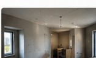
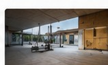
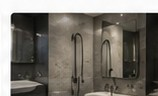
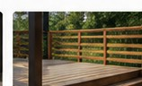

Laadukasta rakentamista – Turussa ja lähialueilla
RAKENNAMME UNELMASI TODEKSI
Luotettava rakennusalan kumppani remontteihin, maalaustöihin ja rakentamiseen. Laadulla ja sovitussa aikataulussa.
✓ Laadukas työnjälki
✓ Sovituissa aikatauluissa
✓ Luotettava kumppani
✓ Selkeä hinnoittelu
Palvelumme
Monipuoliset rakennuspalvelut
Tarjoamme rakennus- ja remonttipalvelut yksityisille ja yrityksille Turussa sekä lähialueilla. Myös pienemmät työt ovat tervetulleita.

Tasoitus- ja maalaustyöt
Seinien ja kattojen tasoitukset sekä sisämaalaukset huolellisella viimeistelyllä.
Lue lisää →
Ulko- ja kattomaalaukset
Rakennusten ulkopintojen ja kattojen maalaustyöt ammattitaidolla.
Lue lisää →
Terassit ja pihatyöt
Terassit, aidat ja muut ulkor